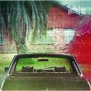
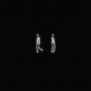

Music Reviews
-
Candy Claws Hidden Lands
Hip and hazy Colorado-gaze. One of the better albums of the year.
Michael Waters lauds... -

Autolux Transit Transit
After a six year absence, Autolux return on their own terms, still sounding very disparate to current trends.
Juan Edgardo Rodríguez listens with thick headphones... -

Arcade Fire The Suburbs
It's not the album that will turn them into Coldplay. Whew!
Alan Shulman reviews -

Max Richter Infra
Classically trained composer extends his ballet piece, further developing his unique blend of classical instrumentation and sparse electronics.
Juan Edgardo Rodríguez is lost in a haze of static...
-

The National High Violet
The National return with the follow-up to 2007's landmark release, Boxer.
David Coleman reviews... -

Best Coast Crazy for You
Lead by blog darling Bethany Cosentino, the California duo's debut album explores different forms of sun pop with subtle touches of alt rock's punkish attitude.
Juan Edgardo Rodríguez feels bad for Bethany Cosentino's ex...
-

Ariel Pink's Haunted Graffiti Before Today
Ariel Pink paints surreal Dali-esque landscapes on our aural canvases in his latest recording.
Lukas Clark-Memler thinks Ariel Pink could save pop music...
-

R.E.M. Fables of the Reconstruction [Deluxe Edition]
R.E.M. celebrates the 25th anniversary of their most overlooked record with a newly remastered reissue.
Juan Edgardo Rodríguez reviews... -
Rob Padgham Stemwinder
Rob Padgham mines his record collection for inspiration, resulting in an album full of exploration.
Andrew Baer likes the music in the northernmost corner of the Northwest... -
Menomena Mines
"Oh, Sea Legs! Please don't fail me now!" — After more than three years, Menomena returns with Mines and the results are worth the wait.
Sean Caldwell still loves this band...